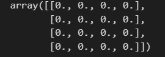
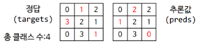
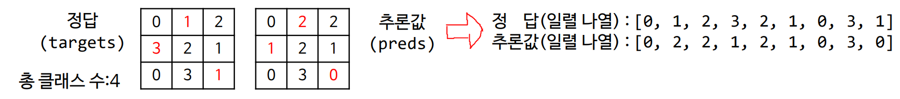
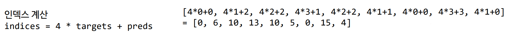
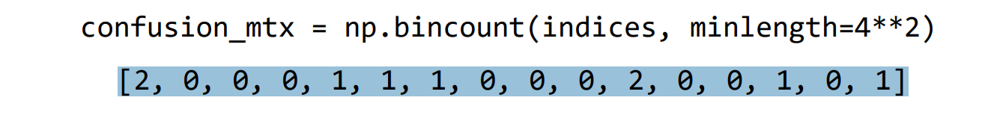

#Datasets
import torch
from pathlib import Path
import numpy as np
import cv2
import albumentations as A
from albumentations.pytorch import ToTensorV2
#Utils
import os
import cv2
import numpy as np
import torch
#ConfusionMatrix
import numpy as np
#Loss
import torch
import torch.nn.functional as F
#Train
import os
import argparse
import torch
import torch.optim as optim
import time
import wandb
from pathlib import Path
from torchvision import modelsThis is a post with executable code.
Imports
Dataset
class KariRoadDataset(torch.utils.data.Dataset):
def __init__(self, root, train=False):
self.root = Path(root)
self.train = train
if train:
self.img_dir = self.root/'train'/'images'
else:
self.img_dir = self.root/'val'/'images'
self.img_files = sorted(self.img_dir.glob('*.png'))
self.transform = get_transforms(train)
def __getitem__(self, idx):
img_file= self.img_files[idx].as_posix()
label_file = img_file.replace('images', 'labels')
img = cv2.imread(img_file)
label = cv2.imread(label_file, cv2.IMREAD_GRAYSCALE)
img, label = self.transform(img, label)
return img, label, img_file
def __len__(self):
return len(self.img_files)
class ImageAug:
def __init__(self, train):
if train:
self.aug = A.Compose([A.RandomCrop(256, 256),
A.HorizontalFlip(p=0.5),
A.ShiftScaleRotate(p=0.3),
A.RandomBrightnessContrast(p=0.3),
A.pytorch.transforms.ToTensorV2()])
else:
self.aug = ToTensorV2()
def __call__(self, img, label):
transformed = self.aug(image=img, mask=np.squeeze(label))
return transformed['image']/255.0, transformed['mask']
def get_transforms(train):
transforms = ImageAug(train)
return transformsdef __init__(self, root, train=False):
self.root = Path(root)
self.train = train
if train:
self.img_dir = self.root/'train'/'images'
else:
self.img_dir = self.root/'val'/'images'
self.img_files = sorted(self.img_dir.glob('*.png'))
self.transform = get_transforms(train)init 메소드는 클래스가 초기화될 때
학습 여부에 따라 데이터셋의 루트 경로와를 설정하고,
이 정보들을 클래스 내에서 사용할 수 있도록 준비합니다.
def __getitem__(self, idx):
img_file= self.img_files[idx].as_posix()
label_file = img_file.replace('images', 'labels')
img = cv2.imread(img_file)
label = cv2.imread(label_file, cv2.IMREAD_GRAYSCALE)
img, label = self.transform(img, label)
return img, label, img_file def __len__(self):
return len(self.img_files)def __init__(self, train):
if train:
self.aug = A.Compose([A.RandomCrop(256, 256),
A.HorizontalFlip(p=0.5),
A.ShiftScaleRotate(p=0.3),
A.RandomBrightnessContrast(p=0.3),
A.pytorch.transforms.ToTensorV2()])
else:
self.aug = ToTensorV2()def __call__(self, img, label):
transformed = self.aug(image=img, mask=np.squeeze(label))
return transformed['image']/255.0, transformed['mask']def get_transforms(train):
transforms = ImageAug(train)
return transforms코드
---
def __init__(self, root, train=False):
---결과
---
매번 클래스가 초기화될 때마다.
1) 학습 모드에 따른 이미지 파일 경로설정
2) class 내에서 사용할 정보들을 정의
---Utils
def make_color_label(label):
h, w = label.shape
color_label = np.zeros((h, w, 3), dtype=np.uint8) # (H, W, 3) shape
colors = [
[0, 0, 0], # 0: background
[144, 124, 226], # 1: motorway
[172, 192, 251], # 2: trunk
[161, 215, 253], # 3: primary
[187, 250, 246], # 4: secondary
[255, 255, 255], # 5: tertiary
[49, 238, 75], # 6: path
[173, 173, 173], # 7: under construction
[255, 85, 170], # 8: train guideway
[234, 232, 120] # 9: airplay runway
]
for i in range(10):
color_label[label == i] = colors[i]
return color_label
def plot_image(img, label=None, save_file='image.png', alpha=0.3):
# if img is tensor, convert to cv2 image
if torch.is_tensor(img):
img = img.mul(255.0).cpu().numpy().transpose(1, 2, 0).astype(np.uint8)
if label is not None:
# if label_img is tensor, convert to cv2 image
if torch.is_tensor(label):
label = label.cpu().numpy().astype(np.uint8)
color_label = make_color_label(label)
label = color_label
else:
color_label = make_color_label(label)
label = color_label
# overlay images
img = cv2.addWeighted(img, 1.0, label, alpha, 0)
# save image
cv2.imwrite(save_file, img)def make_color_label(label):
h, w = label.shape
color_label = np.zeros((h, w, 3), dtype=np.uint8) # (H, W, 3) shape
colors = [
[0, 0, 0], # 0: background
[144, 124, 226], # 1: motorway
[172, 192, 251], # 2: trunk
[161, 215, 253], # 3: primary
[187, 250, 246], # 4: secondary
[255, 255, 255], # 5: tertiary
[49, 238, 75], # 6: path
[173, 173, 173], # 7: under construction
[255, 85, 170], # 8: train guideway
[234, 232, 120] # 9: airplay runway
]
for i in range(10):
color_label[label == i] = colors[i]
return color_labelinit 메소드는 클래스가 초기화될 때
학습 여부에 따라 데이터셋의 루트 경로와를 설정하고,
이 정보들을 클래스 내에서 사용할 수 있도록 준비합니다.
def plot_image(img, label=None, save_file='image.png', alpha=0.3):
# if img is tensor, convert to cv2 image
if torch.is_tensor(img):
img = img.mul(255.0).cpu().numpy().transpose(1, 2, 0).astype(np.uint8)
if label is not None:
# if label_img is tensor, convert to cv2 image
if torch.is_tensor(label):
label = label.cpu().numpy().astype(np.uint8)
color_label = make_color_label(label)
label = color_label
else:
color_label = make_color_label(label)
label = color_label
# overlay images
img = cv2.addWeighted(img, 1.0, label, alpha, 0)
# save image
cv2.imwrite(save_file, img)init 메소드는 클래스가 초기화될 때
학습 여부에 따라 데이터셋의 루트 경로와를 설정하고,
이 정보들을 클래스 내에서 사용할 수 있도록 준비합니다.
ConfusionMatrix
class ConfusionMatrix:
def __init__(self, num_classes):
self.num_classes = num_classes
self.confusion_matrix = np.zeros((num_classes, num_classes))
def process_batch(self, preds, targets):
targets = targets.cpu().numpy().flatten()
preds = preds.argmax(1).cpu().numpy().flatten()
mask = (targets >= 0) & (targets < self.num_classes)
confusion_mtx = np.bincount(
self.num_classes * targets[mask].astype(int) + preds[mask],
minlength=self.num_classes ** 2)
confusion_mtx = confusion_mtx.reshape(self.num_classes, self.num_classes)
self.confusion_matrix += confusion_mtx
return confusion_mtx
def print(self):
for i in range(self.num_classes):
print(f"Class{i}:{self.confusion_matrix[i,i]} / {self.confusion_matrix[i].sum()}")
def get_pix_acc(self):
return np.diag(self.confusion_matrix).sum() / self.confusion_matrix.sum()
def get_class_acc(self):
class_acc = np.diag(self.confusion_matrix) / self.confusion_matrix.sum(axis=1)
return np.nanmean(class_acc),class_acc
def get_iou(self):
divisor = self.confusion_matrix.sum(axis=1)\
+ self.confusion_matrix.sum(axis=0)\
- np.diag(self.confusion_matrix)
iou = np.diag(self.confusion_matrix) / divisor
return iou
def get_mean_iou(self):
iou = self.get_iou()
return np.nansum(iou) / self.num_classes
def __init__(self, num_classes):
self.num_classes = num_classes
self.confusion_matrix = np.zeros((num_classes, num_classes))init 메소드는
클래스가 초기화될 때 클래스 내에서 사용할 수 있도록 준비물을 준비하는 단계입니다.
예시 상황
class의 수를 4이라고 했을때, 0으로 구성된 4by4행렬이 준비된다.
def process_batch(self, preds, targets):
targets = targets.cpu().numpy().flatten()
preds = preds.argmax(1).cpu().numpy().flatten()
mask = (targets >= 0) & (targets < self.num_classes)
confusion_mtx = np.bincount(
self.num_classes * targets[mask].astype(int) + preds[mask],
minlength=self.num_classes ** 2)
confusion_mtx = confusion_mtx.reshape(self.num_classes, self.num_classes)
self.confusion_matrix += confusion_mtx[설명]

mask는 사진에서 설정한 클래스(여기서는 4로 설정했으니깐 0~3) 값인 것만 남기고,
그 외의 값은 제외하는 역할을 한다.


갯수의 결과가 [2, 0, 0, 0, 1, 1, 1, 0, 0, 0, 2, 0, 0, 1, 0, 1] 이렇게 나온다.
tip. minlength는 인덱스의 범위를 나타냄 이 식에서는 4x4 표를 만들것이기 때문에 4**2f로 설정

def print(self):
for i in range(self.num_classes):
print(f"Class{i}:
{self.confusion_matrix[i,i]} / {self.confusion_matrix[i].sum()}")각 클래스별 accuracy를 표현
Class0:2.0 / 2.0 <=정답0 2개 중 2개를 맞췄어
Class1:1.0 / 3.0 <=정답1 3개 중 1개를 맞췄어
Class2:2.0 / 2.0 <=정답1 2개 중 2개를 맞췄어
Class3:1.0 / 2.0 <=정답1 2개 중 1개를 맞췄어def get_pix_acc(self):
return np.diag(self.confusion_matrix).sum() / self.confusion_matrix.sum()get_pix_acc 메서드는 픽셀 정확도(Pixel Accuracy)를 계산하는 역할
픽셀 정확도는 이미지 분할이나 분류 작업에서 예측된 픽셀이 실제 값과 일치하는 비율
get_pix_acc답 : 6/9
def get_class_acc(self):
class_acc =np.diag(self.confusion_matrix) / self.confusion_matrix.sum(axis=1)
return np.nanmean(class_acc),class_acc도로 종류(클래스)가 비포장도로 국도 고속도로로 3개의 클래스가 있다고 하자 도심에서 도로탐지를 한 뒤 평가하려고 하면 도시에 비포장도로가 없기에 accuracy를 구하면 비포장도로의 클래스는 0(Nan)값이 나오고 전체적 accuracy가 감소할 것이다. 이것을 방지하기 위해서 get_class_acc을 쓰는것이다. 방법은 np.nanmean()을 쓰면 된다.
def get_iou(self):
divisor = self.confusion_matrix.sum(axis=1)\
+ self.confusion_matrix.sum(axis=0)\
- np.diag(self.confusion_matrix)
iou = np.diag(self.confusion_matrix) / divisor
return iou def get_mean_iou(self):
iou = self.get_iou()
return np.nansum(iou) / self.num_classesex_targets=torch.Tensor([[[0,1,2],[3,2,1],[0,3,1]]])#shape=(1,3,3)=(batchsize,H,W)
ex_preds=torch.Tensor([[[[1,0,0],
[0,0,0],
[1,0,1]],
[[0,0,0],
[1,0,1],
[0,0,0]],
[[0,1,1],
[0,1,0],
[0,0,0]],
[[0,0,0],
[0,0,0],
[0,1,0]]]]) #shape=(1,4,3,3)=(batchsize,C,H,W)
# ConfusionMatrix 클래스 인스턴스화
num_classes = 4 # 0 ~ 10 사이의 숫자를 사용하므로 총 11개의 클래스
confusion_matrix = ConfusionMatrix(num_classes)
# 배치 처리
confusion_matrix.process_batch(ex_preds, ex_targets)
# 메트릭 출력
confusion_matrix.print()
print("process_batch:", confusion_matrix.process_batch(ex_preds, ex_targets))
print("Pixel Accuracy:", confusion_matrix.get_pix_acc())
print("Class Accuracy:", confusion_matrix.get_class_acc())
print("IoU:", confusion_matrix.get_iou())
print("Mean IoU:", confusion_matrix.get_mean_iou())결과
Class0:2.0 / 2.0 <=정답0 2개 중 2개를 맞췄어
Class1:1.0 / 3.0 <=정답1 3개 중 1개를 맞췄어
Class2:2.0 / 2.0 <=정답1 2개 중 2개를 맞췄어
Class3:1.0 / 2.0 <=정답1 2개 중 1개를 맞췄어
process_batch:
[[2 0 0 0]
[1 1 1 0]
[0 0 2 0]
[0 1 0 1]]
Pixel Accuracy: 0.6666
Class Accuracy: 0.7083
IoU: [0.66666667 0.25 0.66666667 0.5 ]
Mean IoU: 0.52083
Loss
def bce_loss(preds, targets, pos_weight=None):
"""Computes the weighted binary cross-entropy loss.
Args:
targets: a tensor of shape [B, 1, H, W].
preds: a tensor of shape [B, 1, H, W]
Returns:
bce_loss: the weighted binary cross-entropy loss.
"""
bce_loss = F.binary_cross_entropy_with_logits(
preds.float(),
targets.float(),
pos_weight=pos_weight,
)
return bce_loss
def ce_loss(preds, targets, ignore=255):
"""Computes the weighted multi-class cross-entropy loss.
Args:
targets: a tensor of shape [B, H, W].
preds: a tensor of shape [B, C, H, W].
ignore: the class index to ignore.
Returns:
ce_loss: the weighted multi-class cross-entropy loss.
"""
ce_loss = F.cross_entropy(
preds.float(),
targets.long(), # [B, H, W]
ignore_index=ignore,
)
return ce_loss
def dice_loss(preds, targets, eps=1e-7):
"""Computes the Sørensen–Dice loss.
Args:
preds(logits) a tensor of shape [B, C, H, W]
targets: a tensor of shape [B, 1, H, W].
eps: added to the denominator for numerical stability.
Returns:
dice_loss: the Sørensen–Dice loss.
"""
num_classes = preds.shape[1]
true_1_hot = F.one_hot(targets.squeeze(1), num_classes=num_classes) # (B, 1, H, W) to (B, H, W, C)
true_1_hot = true_1_hot.permute(0, 3, 1, 2) # (B, H, W, C) to (B, C, H, W)
probas = F.softmax(preds, dim=1)
true_1_hot = true_1_hot.type(preds.type()).contiguous()
dims = (0,) + tuple(range(2, targets.ndimension())) # dims = (0, 2, 3)
intersection = torch.sum(probas * true_1_hot, dims) # intersection w.r.t. the class
cardinality = torch.sum(probas + true_1_hot, dims) # cardinality w.r.t. the class
dice_loss = (2. * intersection / (cardinality + eps)).mean()
return (1 - dice_loss)
def jaccard_loss(preds, targets, eps=1e-7):
"""Computes the Jaccard loss.
Args:
preds(logits) a tensor of shape [B, C, H, W]
targets: a tensor of shape [B, 1, H, W].
eps: added to the denominator for numerical stability.
Returns:
Jaccard loss
"""
num_classes = preds.shape[1]
true_1_hot = F.one_hot(targets.squeeze(1), num_classes=num_classes) # (B, 1, H, W) to (B, H, W, C)
true_1_hot = true_1_hot.permute(0, 3, 1, 2) # (B, H, W, C) to (B, C, H, W)
probas = F.softmax(preds, dim=1)
true_1_hot = true_1_hot.type(preds.type()).contiguous()
dims = (0,) + tuple(range(2, targets.ndimension()))
intersection = torch.sum(probas * true_1_hot, dims)
cardinality = torch.sum(probas + true_1_hot, dims)
union = cardinality - intersection
jacc_loss = (intersection / (union + eps)).mean()
return (1 - jacc_loss)one_epoch( train, val )
def train_one_epoch(train_dataloader, model, optimizer, device):
model.train()
losses = []
for i, (imgs, targets, _) in enumerate(train_dataloader):
imgs, targets = imgs.to(device), targets.to(device)
preds = model(imgs)['out'] # forward
loss = ce_loss(preds, targets) # calculates the iteration loss
optimizer.zero_grad() # zeros the parameter gradients
loss.backward() # backward
optimizer.step() # update weights
print('\t iteration: %d/%d, loss=%.4f' % (i, len(train_dataloader)-1, loss))
losses.append(loss.item())
return torch.tensor(losses).mean().item()
def val_one_epoch(val_dataloader, model, confusion_matrix, device):
model.eval()
losses = []
total = 0
for i, (imgs, targets, img_file) in enumerate(val_dataloader):
imgs, targets = imgs.to(device), targets.to(device)
with torch.no_grad():
preds = model(imgs)['out'] # forward, preds: (B, 2, H, W)
loss = ce_loss(preds, targets)
losses.append(loss.item())
confusion_matrix.process_batch(preds, targets)
total += preds.size(0)
# sample images
if i == 0:
preds = torch.argmax(preds, axis=1) # (1, H, W)
for j in range(3):
save_file = os.path.join('outputs', 'val_%d.png' % (j))
plot_image(imgs[j], preds[j], save_file)
avg_loss = torch.tensor(losses).mean().item()
return avg_lossTrain
def train(epochs=200, batch_size = 8 , name = 'suwany'):
# wandb settings
wandb.init(id=name, resume='allow', mode='disabled')
wandb.config.update({
'epochs': epochs,
'batch_size': batch_size,
'name': name
})
# Train dataset
train_dataset = KariRoadDataset('./data/kari-road', train=True)
# Train dataloader
num_workers = min([os.cpu_count(), batch_size, 16])
train_dataloader = torch.utils.data.DataLoader(train_dataset, batch_size=batch_size,
shuffle=True, num_workers=num_workers, pin_memory=True, drop_last=False)
# Validation dataset
val_dataset = KariRoadDataset('./data/kari-road', train=False)
val_dataloader = torch.utils.data.DataLoader(val_dataset, batch_size=batch_size,
shuffle=True, num_workers=num_workers, pin_memory=True, drop_last=False)
# Network model
num_classes = 10 # background + 1 classes
model = models.segmentation.deeplabv3_resnet101(num_classes=num_classes)
# GPU-support
device = torch.device("cuda" if torch.cuda.is_available() else "cpu")
if torch.cuda.device_count() > 1: # multi-GPU
model = torch.nn.DataParallel(model)
model.to(device)
# Optimizer
optimizer = optim.Adam(model.parameters(), lr=3e-4)
# Learning rate scheduler
lr_scheduler = torch.optim.lr_scheduler.ReduceLROnPlateau(optimizer, mode='min', factor=0.5, patience=5)
# loading a weight file (if exists)
weight_file = Path('weights')/(name + '.pth')
best_accuracy = 0.0
start_epoch, end_epoch = (0, epochs)
if os.path.exists(weight_file):
checkpoint = torch.load(weight_file)
model.load_state_dict(checkpoint['model'])
start_epoch = checkpoint['epoch'] + 1
best_accuracy = checkpoint['best_accuracy']
print('resumed from epoch %d' % start_epoch)
confusion_matrix = ConfusionMatrix(num_classes)
# training/validation
for epoch in range(start_epoch, end_epoch):
print('epoch: %d/%d' % (epoch, end_epoch-1))
t0 = time.time()
# training
epoch_loss = train_one_epoch(train_dataloader, model, optimizer, device)
t1 = time.time()
print('loss=%.4f (took %.2f sec)' % (epoch_loss, t1-t0))
lr_scheduler.step(epoch_loss)
# validation
val_epoch_loss = val_one_epoch(val_dataloader, model, confusion_matrix, device)
val_epoch_iou = confusion_matrix.get_iou()
val_epoch_mean_iou = confusion_matrix.get_mean_iou()
val_epoch_pix_accuracy = confusion_matrix.get_pix_acc()
print('[validation] loss=%.4f, mean iou=%.4f, pixel accuracy=%.4f' %
(val_epoch_loss, val_epoch_mean_iou, val_epoch_pix_accuracy))
print('class IoU: [' + ', '.join([('%.4f' % (x)) for x in val_epoch_iou]) + ']')
# saving the best status into a weight file
if val_epoch_pix_accuracy > best_accuracy:
best_weight_file = Path('weights')/(name + '_best.pth')
best_accuracy = val_epoch_pix_accuracy
state = {'model': model.state_dict(), 'epoch': epoch, 'best_accuracy': best_accuracy}
torch.save(state, best_weight_file)
print('best accuracy=>saved\n')
# saving the current status into a weight file
state = {'model': model.state_dict(), 'epoch': epoch, 'best_accuracy': best_accuracy}
torch.save(state, weight_file)
# wandb logging
wandb.log({'train_loss': epoch_loss, 'val_loss': val_epoch_loss, 'val_accuracy': val_epoch_pix_accuracy})
실행 코드
train(epochs=200, batch_size = 8 , name = 'suwany')ERROR:wandb.jupyter:Failed to detect the name of this notebook, you can set it manually with the WANDB_NOTEBOOK_NAME environment variable to enable code saving.--------------------------------------------------------------------------- ValueError Traceback (most recent call last) Cell In[10], line 1 ----> 1 train(epochs=200, batch_size = 8 , name = 'suwany') Cell In[9], line 14, in train(epochs, batch_size, name) 12 # Train dataloader 13 num_workers = min([os.cpu_count(), batch_size, 16]) ---> 14 train_dataloader = torch.utils.data.DataLoader(train_dataset, batch_size=batch_size, 15 shuffle=True, num_workers=num_workers, pin_memory=True, drop_last=False) 17 # Validation dataset 18 val_dataset = KariRoadDataset('./data/kari-road', train=False) File ~/anaconda3/envs/gd/lib/python3.10/site-packages/torch/utils/data/dataloader.py:353, in DataLoader.__init__(self, dataset, batch_size, shuffle, sampler, batch_sampler, num_workers, collate_fn, pin_memory, drop_last, timeout, worker_init_fn, multiprocessing_context, generator, prefetch_factor, persistent_workers, pin_memory_device) 351 else: # map-style 352 if shuffle: --> 353 sampler = RandomSampler(dataset, generator=generator) # type: ignore[arg-type] 354 else: 355 sampler = SequentialSampler(dataset) # type: ignore[arg-type] File ~/anaconda3/envs/gd/lib/python3.10/site-packages/torch/utils/data/sampler.py:107, in RandomSampler.__init__(self, data_source, replacement, num_samples, generator) 103 raise TypeError("replacement should be a boolean value, but got " 104 "replacement={}".format(self.replacement)) 106 if not isinstance(self.num_samples, int) or self.num_samples <= 0: --> 107 raise ValueError("num_samples should be a positive integer " 108 "value, but got num_samples={}".format(self.num_samples)) ValueError: num_samples should be a positive integer value, but got num_samples=0